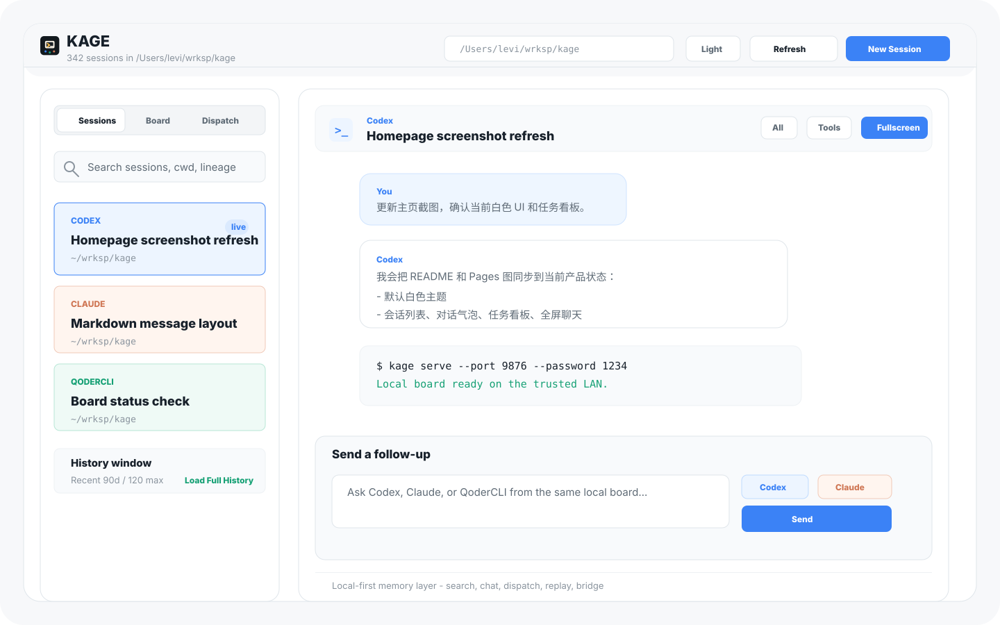
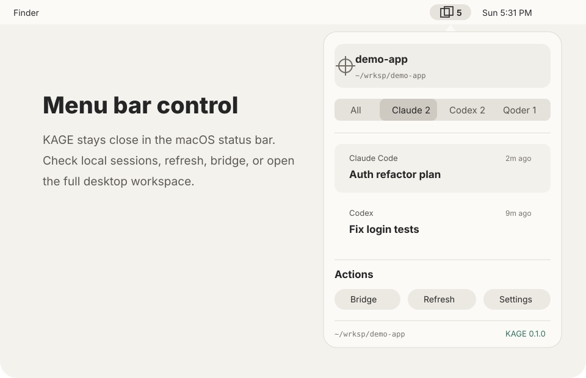
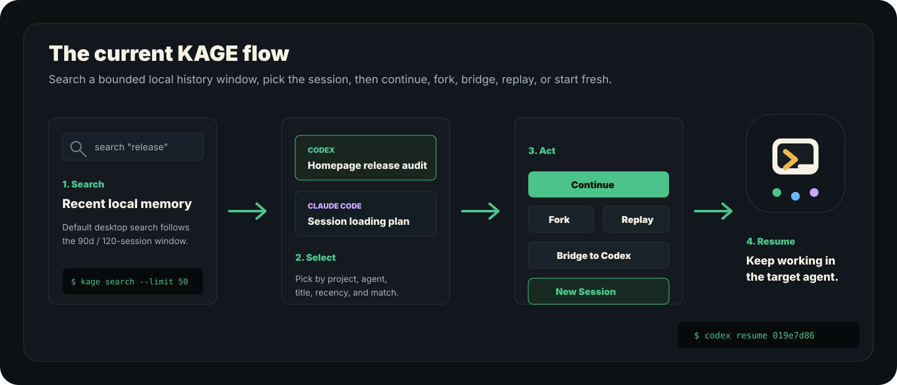

Resume the selected session in its native agent without hunting through JSONL files.
Local-first AI coding session manager
KAGE
A macOS desktop workspace and CLI for finding, searching, replaying, and moving local coding-agent sessions across Claude Code, Codex, QoderCLI, and QoderWork without uploading transcript content.
New Session
Recent history window
Claude Code / Codex / QoderCLI / QoderWork
Latest: v0.1.13
90d / 120
Recent desktop window by default.
Terminal.app
Fallback for noisy interactive sessions.
Demo mode
Try KAGE before local history exists.
Local first
Transcript content stays on disk.
Current desktop surface
The app is now centered on the full desktop workspace: recent local sessions on the left, explicit action controls on the right, and a clear path to launch a new agent session.


Workflows that match local agent memory
KAGE is not another coding agent. It is the session layer around the agents you already use.
Start Codex, Claude Code, or QoderCLI in the watched project from KAGE or Terminal.app.
Branch a session or move useful context into another agent's native resume format.
Turn a transcript into a local read-only review when the work needs to be inspected.

Fit check
Use KAGE if
- You use more than one AI coding agent.
- You need to find old local sessions by project or transcript text.
- You want to fork, bridge, or replay sessions without copy-pasting transcripts.
Skip it for now if
- You only use one agent and never revisit old sessions.
- You need a signed and notarized macOS installer today.
- You expect hosted sync, team sharing, or mobile control today.
One local workspace for agent memory
Each agent keeps its own native session store. KAGE adds discovery, search, conversion, preview, cleanup, replay, and desktop launch controls on top.
| Route | Use it when |
|---|---|
kage c2x |
Continue a Claude Code session in Codex. |
kage x2q |
Move Codex context into QoderCLI resume format. |
kage sessions --since 90d --limit 120 |
List a bounded recent session window for large local histories. |
kage q2v |
Replay a QoderCLI session as a local HTML story. |
kage qoderwork qoderwork --export session-story-html |
Replay a QoderWork source session as a local HTML story. |
Built for open source adoption
Releases carry user-facing workflow notes, GitHub issues hold the roadmap, and the public homepage stays aligned with the latest DMG.
Browse sessions, filter agents, inspect context, run actions, and try demo mode.
Search local sessions by project, agent, title, date range, and transcript text.
Move useful context across Claude Code, Codex, QoderCLI, and QoderWork sessions.
DMG releases are published; signing and notarization remain tracked in GitHub issues.